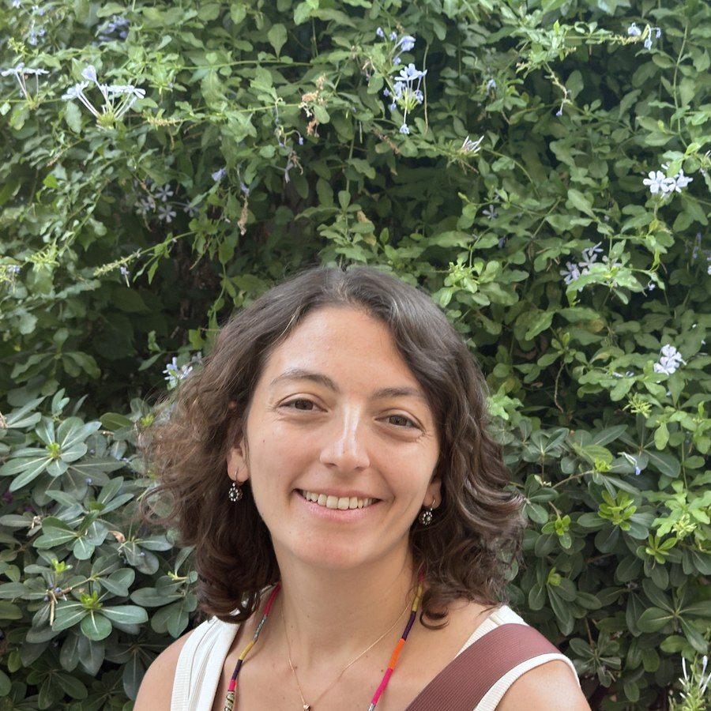

2020 – 2023
Teaching assistant
UT Austin · Fertility and Reproduction · Introduction to Social Statistics · Social Research Methods · Introduction to the Study of Society · Health and Society

I am a interdisciplinary sociologist and social demographer with varied interests in inequality and wellbeing. My research focuses on questions at the intersection of families, health and work, with an emphasis on gender and sexuality.
I am a final year PhD candidate at the University of Texas at Austin, where I am also affiliated with the Population Research Center. My work has appeared in the Journal of Marriage and Family, the Journal of Health and Social Behavior and the Journal of Balkan and Near Eastern Studies.
Before Austin I completed an MA in Modern Turkish History and a BA in Economics at Boğaziçi University in Istanbul, and spent four years doing social impact research in Turkey.
Family · Gender & Sexuality · Health · Social Demography · Intimate Relationships
I study how the dynamics of married life have evolved alongside major social changes in the United States — and what those arrangements do to health, work and wellbeing.
Dissertation
Counting on Each Other: Tacit Dependence and the Organization of Household Life. Co-chaired by Shannon Cavanagh and Debra Umberson.
Even as social norms shift, many elements of couplehood remain constant. Within that juncture, I analyse how income dynamics, gender and family composition shape daily relationship processes across same- and different-sex couples, offering a queer-informed perspective on how gendered responsibilities become enmeshed beyond heteronormative scripts. Using dyadic data from 411 long-term married couples in the Health and Relationships Project, where both partners report on the same household, I examine how earnings influence partners' reliance on one another for household labour and financial management — with a conceptual focus on tacit dependence.
In the first article from the dissertation, relative earnings shape dependence in opposite directions across domains: when one partner earns more, they report lower dependence on their spouse for financial management, but greater dependence for routine housework like laundry. And respondents partnered with women report relying on them for financial management regardless of who earns more. Dependence, then, is not simply a byproduct of who performs the labour, but a distinct relational process through which gender and economic resources organise everyday family life.
Relationships, gender and health
My collaborators and I examine how relationships and gender intersect to shape health. In a first-authored article in the Journal of Health and Social Behavior, we use ten days of dyadic diary data to ask how sleep quality shapes daily marital strain in midlife same- and different-sex couples. Better sleep — one's own and one's partner's — is associated with lower marital strain, particularly for women in different-sex couples, showing how an ostensibly individual health behaviour operates relationally.
In a second project with Jaime Hsu, we ask how financial strain and social support shape depressive symptoms across same- and different-sex marriages. I am also extending this work to inequalities in household labour, asking whether the responsibilities that make one partner essential to a household also create unequal opportunities for rest.
And I have ongoing qualitative work examining the health management and relationship histories of bi+ individuals in long-term relationships.
Manuscripts are available for the unpublished papers — feel free to email me.
Economic and policy outcomes
My research in the Journal of Marriage and Family examined how young adults' coresidence with parents shapes their early career outcomes, using NLSY97 data. We found that short-term coresidence can support career advancement, while prolonged coresidence is linked to stalled occupational standing — showing how living arrangements structure labour trajectories. I wrote about it briefly here.
A long-standing interest in social policy runs through several projects. Work in the Journal of Health and Social Behavior asks whether and how family structure and education intersect with national policy contexts in the United States, United Kingdom and Australia to shape maternal mental health, highlighting how institutional design can amplify or buffer inequality. Earlier work in the Journal of Balkan and Near Eastern Studies, drawn from my master's project, compared the retirement prospects of workers across sectors in Turkey and traced how the country's pension structure embedded familial assumptions into the labour market.
I have taught and assisted in Introduction to Sociology, Social Statistics, Research Methods, Fertility and Reproduction, Health and Society, and Global Health Issues and Systems — in lecture halls of more than 200 students, in small discussion classes, online, and at a women's correctional facility in central Texas through UT Austin's Texas Prison Education Initiative.
Courses taught
Every major challenge facing the world today — pandemics, climate change, armed conflict, food insecurity — has consequences for health that are not shared equally. Drawing on sociology, public health, medicine, economics, political science and anthropology, the course treats health as a fundamentally social phenomenon rather than a purely medical one. We then turn to the institutions that respond, comparing health systems across world regions and evaluating how governments, international organisations and communities work to improve population health.
Health often seems personal. When you visit a doctor, they ask about your individual choices — what you eat, how much you exercise, whether you smoke or drink. But health is shaped by much bigger forces: what we eat depends not only on our choices but on our income, how much time we have, and whether there is a grocery store nearby. The course examines how structures of power, inequality and policy shape health outcomes and access to care, and builds a sociologically informed perspective on disparities across gender, sexuality, race, ethnicity and social class.
Teaching assistant
2020 – 2023
UT Austin · Fertility and Reproduction · Introduction to Social Statistics · Social Research Methods · Introduction to the Study of Society · Health and Society
Introduction to Sociology · Quantitative Methods · Medicine and Society · Sociology of Health and Illness · Global Health and Inequality · Families, Relationships and Health
Peer-reviewed articles, working papers, public writing in English and Turkish, and selected conference presentations.
Peer-reviewed articles
Sleep tight, don't fight? Daily sleep quality and marital strain in same- and different-sex marriages in the United States
Journal of Health and Social Behavior, online first.
Maternal depression across early childhood: similarities and differences across three liberal democracies
Journal of Health and Social Behavior, online first.
Slow to launch: young men's parental coresidence and employment outcomes
Journal of Marriage and Family 86(4): 1009–33.
W. Parker Frisbie Outstanding Publication Award, Population Research Center, UT Austin, 2024
The incompatibility of pension system and the labour market in Turkey
Journal of Balkan and Near Eastern Studies 20(4): 332–48.
Selected working papers
Keeping the ledger, doing the laundry: tacit dependence and relative earnings in same- and different-sex marriages
In preparation for submission.
Honorable Mention, Norval Glenn Prize, Department of Sociology, UT Austin, 2026
Counting on a spouse: tacit dependence across household domains and marital quality in same- and different-sex couples
Manuscript available.
The sleep cost of housework: nationally representative evidence from same- and different-sex couples in the United States
In progress.
Financial stress, social support, and depressive symptoms in same-sex and different-sex marriages
Manuscript available.
Beyond happily ever after: dyadic negotiations of consensual non-monogamy among bi+ adults in the United States
Manuscript available.
Mental health experiences within sexual and gender diverse long-term marriages
In progress.
Public scholarship and media
Poor sleep quality predicts marital strain, especially for women married to men
More than postpartum: tracking differences in the arc of maternal depression across liberal welfare regimes
Council on Contemporary Families, December 2025.
Slow to launch: adult children living with their parents and employment outcomes
The Society Pages, June 2024.
Artan baskılar ve kaçınılmaz dönüşümler: gençlerin yaşayış biçimleri bizi neden ilgilendiriyor?
Birikim, January 2021. Increasing pressures and inevitable transformations: why do we care about young people's living arrangements?
Demografik, sosyal ve politik dönüşümler ekseninde Türkiye'de aile ve ailecilik yazını
Birikim, vol. 387–388, August 2021. Family and familialism literature in Turkey in the context of demographic, social and political change.
Olağan yaşlılar: yerli dizilerdeki yaşlı karakterlere ilişkin seyirci algısı
Birikim, vol. 362, July–August 2019. Gendered media representations of elderly characters in Turkish TV series.
Kent ve kır arasında bağ kurmak: Boğaziçi Mensupları Tüketim Kooperatifi (Bükoop) deneyimi
In Şehrin Doğası, eds. A. Bartu Candan, C. Kafadar, S. Kafadar and Ç. Kafescioğlu. Istanbul: Metis, forthcoming 2026. In Turkish. Reconnecting the urban and the rural: an alternative food network in the Boğaziçi consumption cooperative.
Türkiye'de değişen emeklilik biçimleri: karşılaştırmalı bir perspektiften metal sanayi ve belediye sektörü işçileri
In Piyasa Hakimiyetinde Sağlık ve Sosyal Güvenlik, ed. G. Yaşar. NotaBene, May 2017. In Turkish. Changing retirement patterns in Turkey: metal industry and municipal sector workers in comparative perspective.
Selected conference presentations
Airing the household's dirty laundry: tacit dependence and relative earnings in same- and different-sex marriages
Poster · Work and Family Researchers Network, Montreal, 2026
The sleep cost of housework: a comparison of same-sex and different-sex relationships in the United States
Poster · Population Association of America, St. Louis, 2026
Sleep tight, don't fight? Daily sleep health and marital strain in same- and different-sex marriages in the United States
Paper · Population Association of America, Washington DC, 2025
Changes in physical health and housework stress in midlife married couples: same-sex and different-sex unions
Paper · American Sociological Association, Montreal, 2024
Household work and marital quality: exploring perceptions of dependence in same-sex and different-sex marriages
Paper · European Population Conference, Edinburgh, 2024
Poster · Population Association of America, Columbus, 2024
Maternal depression across early childhood: similarities and differences across three liberal democracies
Paper · American Sociological Association, Philadelphia, 2023
Slow to launch: the association between young men's coresidence with parents and employment outcomes in their early thirties
Paper · Population Association of America, New Orleans, 2023
Paper · Society for the Advancement of Socio-Economics, Amsterdam, 2022
The 21st-century phenomenon of household arrangement: solo living experiences in Turkey
Paper · Einstein Open Colloquium, Critical Turkey Studies, Berlin, 2020
Changing retirement patterns in Turkey: municipal and metal-sector workers
Paper · Society for the Advancement of Socio-Economics, Berkeley, 2016
A summary below. The full CV — including professional development, complete service record and references — is in the PDF.
Expected 2027
University of Texas at Austin · Certificate in Demography
Dissertation: Counting on Each Other: Tacit Dependence and the Organization of Household Life. Co-chairs: Shannon Cavanagh and Debra Umberson.
2015
Boğaziçi University, Istanbul
Thesis: Changing Retirement Patterns in Turkey: A Comparative Study of Metal and Municipal Sector Workers. Advisor: Ayşe Buğra.
2013
Boğaziçi University, Istanbul
Erasmus programme, Corvinus University, Budapest, spring 2012.
Fall 2026
Instructor of Record · UT Austin, Department of Sociology
Fall 2025
Instructor of Record · Texas Prison Education Initiative
Fall 2025
Guest lecturer · "Systems of Healthcare Around the World"
2020 – 2023
UT Austin · Fertility and Reproduction · Introduction to Social Statistics · Social Research Methods · Introduction to the Study of Society · Health and Society
2023 – 2025
Graduate Research Assistant · Population Research Center, UT Austin
NIH-funded, PI Debra Umberson. Managed key components of HARP Wave 3: survey implementation, participant retention, dyadic diary coordination, data management, and in-depth interviews with long-term bi+ couples.
2021 – 2023
Research Assistant · Population Research Center, UT Austin
NIH-funded, PI Shannon Cavanagh. Longitudinal analyses using US (ECLS-B), UK (MCS) and Australian (LSAC) birth cohort studies.
Summer 2023
Research Assistant · Population Research Center, UT Austin · PI Jennifer Glass
2014 – 2017
Research Assistant · Boğaziçi University and Marmara University, Turkey
Comparative social policy research, labour-market analysis, and qualitative research on retirement systems in Turkey. PI Ayşe Buğra.
2017 – 2020
S360 Sustainability and Communication Services, Istanbul
Social impact evaluations, stakeholder interviews and focus groups; developed Theory of Change and Social Return on Investment frameworks for NGOs, social enterprises and corporate partners.
2026
Department of Sociology, UT Austin
2025 – 2026
UT Austin
2025 – 2026
Texas
2025
UT Austin
2024
Population Research Center, UT Austin
2022
Demography and family sociology, UT Austin
2021 – 2022
Department of Sociology, UT Austin
2024 – present
American Journal of Sociology · Journal of Social Policy · Sociology Lens
2021 – 2025
Council on Contemporary Families · Population Research Center, UT Austin
2023 – 2025
Center for Middle Eastern Studies, UT Austin
Coordinated a mentoring programme connecting more than 100 university students with refugee youth.
2023
Population Association of America annual meeting
Languages
Software
Stata · R · Mplus · NVivo · Qualtrics
Professional associations
Population Association of America · American Sociological Association · Sociologists for Women in Society · Society for the Advancement of Socio-Economics
Always glad to hear from people working on families, gender, health and intimate relationships.
Profiles
Affiliation
Department of Sociology and Population Research Center
University of Texas at Austin